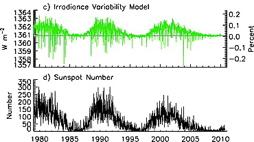
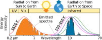
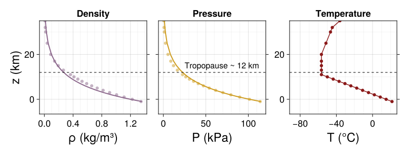
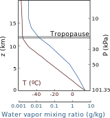
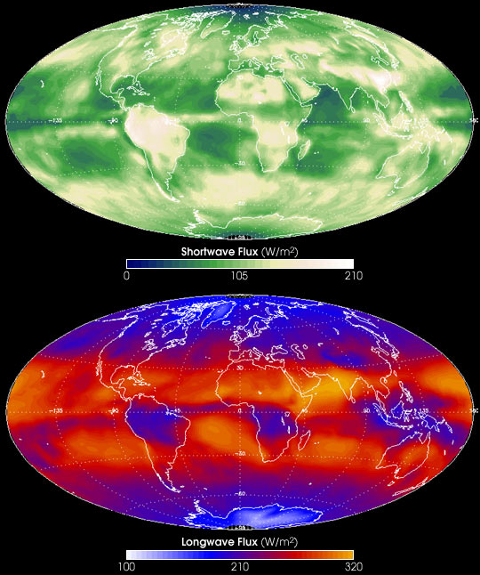

Earth's Radiative Forcings
Week
GEOS 3410
Week Schedule
Tuesday
- Wrap up Earth system physics
- Balancing Earth's energy budget
Thursday
- Energy budget, cont…
- Radiative forcings and the atmosphere
Outside of class
- Reading and questions for Lab 4 on Thursday
- Lab 2/3 due 11:59 pm on Thursday (9/25)
Balancing Earth's energy budget
Variability of the solar constant
(Very little variability)
Does geothermal heat flux play a significant role in Earth's surface energy balance?
| Insolation | ~340 W m-2 |
| Geothermal | ~0.087 W m-2 |


With this energy balance, temperature is … -18°C
Global mean T = 288 K = 15°C
What accounts for this difference?
Photons in the atmosphere
Atomic absorption (and emission)

Electrons can absorb a photon of a given energy to jump to an energy level precisely ΔE more energetic

As the electron falls back down, it emits a photon (with the same λ) in a random direction.
Rayleigh (elastic) scattering


Particles (atom, molecule, aerosol) are much smaller than λ.
Emission & absorption of solar radiation
- Shortwave radiation almost fits ideal blackbody emission
- Deviation from blackbody → atomic absorption & emission
- Atomic absorption in solar atmosphere
- Scattering and molecular absorption in Earth's atmosphere
Molecular vibration ↔ Photons
Each vibrational mode corresponds to a specific wavelength of radiation.| Radial | Latitudinal | Longitudinal | |
|---|---|---|---|
| Symmetric |  |
 |
 |
| Assymetric |  |
 |
 |
Molecules must be electrically lopsided for their bonds to vibrate.
… hence, greenhouse gasses are excellent infrared absorbers!
Incoming shortwave (visible) radiation and outgoing longwave (infrared) radiation

For reference...

Radiative forcing and the atmosphere
External radiative forcings …
Orbital cycles

Solar cycle

Internal radiative forcings…
Gasses, Aerosols
Radiative forcing within the atmosphere
- Focus: troposphere, tropopause, (lower) stratosphere
- The atmosphere is made up of… gasses and aerosols
- Troposphere is well-mixed.
- Why? Convection
- Why? Thermally unstable.
What happens to temperature as we increase elevation? Why?
Adiabatic Lapse rate
$$ \Gamma = \frac{dT}{dz} $$
| Scenario | Lapse rate |
|---|---|
| No convection (radiative equil.) | 16 K/km |
| Dry convection | 10 K/km |
| Moist convection (real world) |
6.5 K/km |
latent heat of condensation
vapor ↔ liquid + energy
Radiative Convective Equilibrium
The equilibrium state of an atmospheric column for which any net loss or gain of radiant energy is balanced by the vertical transport of latent or sensible heat. (AMS)
… an idealization of the climate system in which there is a balance between radiative cooling of the atmosphere and heating by convection (Wing+ 2018)
Emission "through" the troposphere
- Model surface T ~ 320 K (tropics)
- Atmospheric window
- What do the "depths" of absorption features tell us?
skin temperature / altitude

Water vapor and sensitivity to greenhouse forcing

- Lower troposphere has more water vapor → more opaque to IR
- Upper troposphere has less water vapor → more transparent to IR
- Which is more sensitive to GHG forcing?
Enhanced greenhouse effect: warmer surface shifts the adiabat

What does this do to the height of the tropopause?
Greenhouse warming in troposphere → stratosphere cooling

Aerosol forcings
Aerosols:
- Dust
- Salts
- Soot: black, organic carbon
- Volcanic aerosols
- Industrial aerosols
Aerosol-radiation interaction:
- Directly: reflection, scattering
- Indirectly: seed cloud formation as "condensation nuclei"

Forcings and global mean temperature


Sum of forcings → effective radiative forcing → GMT
Radiative forcings determine Earth's energy budget

{kind=link}
{kind=link}
.jpg){kind=link}
{kind=link}
Would you say that H2O is bad?
CO2 is not bad!
Our budget represents Earth system mean
What accounts for variability?
What accounts for variability?
What accounts for variability?
Atmospheric CO2 (1 s = 1 day)
Lab this afternoon in MMS 273
Submit questions by 12:30 pmLab 2/3 due next Thursday (9/25) by 11:59pm
Next Week ()
- General Circulation
- Lab 5 reading + questions